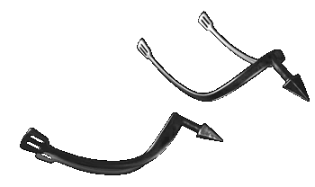

|
Снаряжение всадника и верхового коня |
|
| Русские удила в XII веке
были кольчатыми. Варьируя размер колец, мастера
приспосабливали эту конструкцию к различным по
характеру коням местного разведения и выучки.
Чаще всего удила были двухзвенными. Подковы для
боевых коней в XII веке применялись самые обычные. Стремена были трех конструкций -- с прямой, несколько изогнутой или полукруглой подножкой. Наиболее распространеными были прямые или слабоизогнутые подножки, применявшие тяжеловооруженными всадниками. У феодальных всадников часто были декоративные позолоченные стремена, что выделяло их из окружавших вассалов. В XII веке появляются и стремена с боковыми выступами «кулачками», выполнявшими функцию шпор, а также ножные опоры в форме стрельчатой арки. Шпоры служили эффективным средством понуждения коня, особенно в решающие моменты боевых действий. Они были неотъемлемой принадлежностью любого конного воина. Шип на шпорах был горизонтальным, поднятым вверх или с изогнутой дужкой и шипом, направленным вниз. Впервые появились шипы со специальным противотравмирующим ограничителем -- подвижным звездочным колесиком. Плети чаще всего использовали легковооруженные стрельцы. Они представляли собой металлическое кнутовище с кольцом и приклепанными к нему обоймой для бича и привеском. У других типов плетей затыльники рукоятей были изготовлены из бронзы и кости с боковыми клювовидными выступами. Именно последние были широко распространены в XII веке. |
|
Текст и
иллюстрации (c) 1997 Snowball Interactive Entertainment, Inc. |